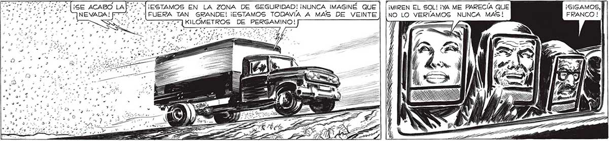
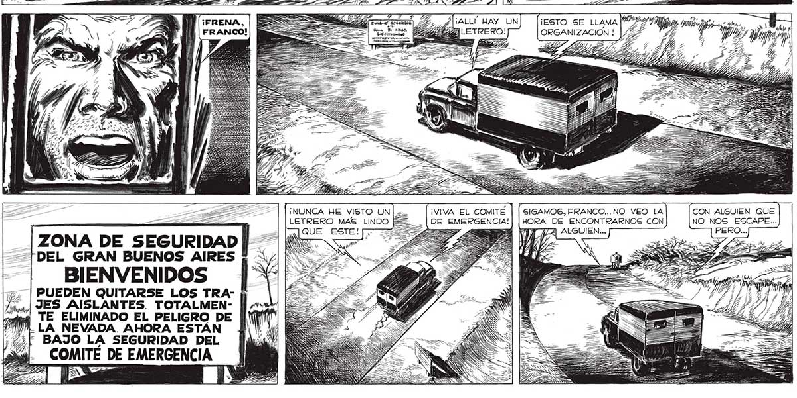

¡MIREN EL SOL! ¡YA ME PARECÍA QUE ¡SIGAMOS, | NO LO VERÍAMOS NUNCA MAS! FRANCO ! | Y (¡SE ACABO LA[7 . J¡ESTAMOS EN LA ZONA DE SEGURIDAD! ¡NUNCA IMAGINÉ QUE NEVADA! 77%. * AN GRANDE! ¡ESTAMOS TODAVÍA A MAS DE VEINTE | 47 G DE PERGAMINO! E y Pat , / ¡ALL' HAY UN ¡ESTO SE LLAMA LETRERO! ORGANIZACION ! FRANCO! VE ¡NUNCA HE VISTO UN | ¡VIVA EL COMITÉ SIGAMOS, FRANCO... NO VEO LA CON ALGUIEN QUE LETRERO MAS LINDO DE EMERGENCIA! | |HORA DE ENCONTRARNOS CON NO NOS ESCAPE... = — T PA ALGUIEN... Í [ZONA DE SEGURIDAD || — Nu == SEN DEL GRAN BUENOS AIRES ( SES SS 5 : BIENVENIDOS | PUEDEN QUITARSE LOS TRA¡JES AISLANTES. TOTALMENTE ELIMINADO EL PELIGRO DE LA NEVADA. AHORA ESTÁN Y BAJO LA SEGURIDAD DEL

